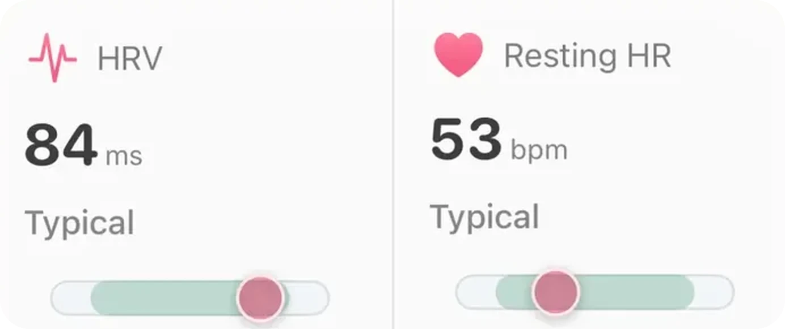
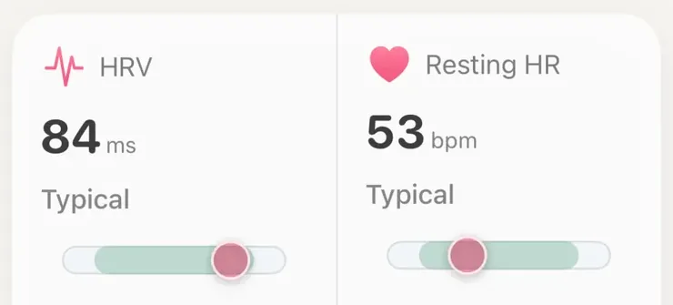

Concept · Heart

There is no single normal HRV. Healthy people range from about 30 to over 90 ms. A good number is one inside your own usual range, and a low one only matters when it stays low for more than a morning or two.
Heart rate variability (HRV) is the small change in spacing between heartbeats. Even at 60 beats a minute, the gaps are not all one second; some are a little shorter, some a little longer. When your body is rested, that spacing tends to vary more. Under strain it tightens up. More in what HRV actually is.
Apple's HealthKit documentation says Apple Watch records HRV automatically and that it uses SDNN: the standard deviation of the intervals between normal heartbeats, in milliseconds. The watch does not measure all the time. It takes short readings at irregular moments when you are still, including through the night, and the Health app lists each one. A night usually holds only a handful of them, so each is a small sample of your night.
Many rings, straps and sports watches report a different HRV figure, RMSSD, the average size of the change from one beat to the next. Both come from the same heartbeats, but they are different calculations. RMSSD mostly reflects the calming (vagal) side of the nervous system; SDNN picks up that too, plus slower swings in heart rate (Shaffer and Ginsberg, 2017). Devices also differ in when they measure: one short reading, a fixed window early in the night, or an average over the whole sleep.
So an Apple Watch reading of 38 ms and another device's 55 ms on the same night are not a contradiction. They are two different rulers. Neither is wrong; they just cannot be compared number for number. Compare each device with itself.
Nunan and colleagues (2010) pooled 44 studies of healthy adults (21,438 people) measured over a few minutes at rest. Average SDNN across those studies was about 50 ms, with study averages ranging from 32 to 93 ms. RMSSD averaged about 42 ms, from 19 to 75 ms (as tabulated by Shaffer and Ginsberg, 2017). Those are averages of groups; individuals spread much wider.
Two healthy 40-year-olds can sit 40 ms apart and both be fine.
Age matters most. In data from over 8 million Fitbit users, Natarajan and colleagues (2020) found HRV falls steadily with age. Altini and Plews (2021), with 28,175 people measuring each morning, found the same, while sex made little difference to HRV. A 2025 systematic review (Brozat and colleagues) concluded that there are still no generally accepted HRV normal values, only large studies that can be used for rough orientation.
That is why a chart of "good HRV by age" is less useful than it looks. Two healthy 40-year-olds can sit 40 ms apart and both be fine. Your own range is the reference that matters, which is the point of why a watch should compare you to yourself.
If your HRV has dropped below your usual, the cause is usually recent and ordinary:
And sometimes nothing is wrong. If your HRV has always been low compared with charts online, that may simply be your level.
Single readings are noisy, and the watch's reading is especially rough in absolute terms: against a chest strap, Apple Watch HRV was off by about 29% on average and read slightly lower (O'Grady and colleagues, 2024). It follows your own ups and downs better than it matches a lab value.
One low night is noise. A low week is a signal.
Plews and colleagues (2013), working with elite endurance athletes, recommended reading HRV as a rolling average over about a week against the person's own baseline rather than reacting to any one day. One low morning after a party says little. A week-long average sliding well below your usual says more, especially if your resting heart rate is creeping up at the same time. If you train, should I run after a bad night's sleep? covers what to do with that.

HRV in AeraEach tile holds last night against your own usual range from the last two weeks, and says Typical, Below your usual or Notably low. No population scale.
Aera, for iPhone and Apple Watch
Aera shows your overnight HRV against your own usual and explains where the number stops being reliable. It reads the HRV readings your Apple Watch saves to Apple Health, including the ones taken while you sleep, and holds them against your own usual from the last two weeks. The HRV tile on Home then says Typical, Below your usual or Notably low (or the same above), and the Sleep screen notes when last night's HRV ran under your usual. Until it has at least seven days of your readings, it says Building baseline instead of guessing.
Aera never puts HRV on a population "good for your age" scale, because no agreed reference exists. Tap the number and the Field Guide explains how it was read, why the watch differs from a chest strap, and why one night is mostly noise. The HRV sheet can also show the raw readings the watch took, hour by hour, gaps included. There is no account, and health numbers are worked out on your iPhone. Your HRV against your usual is free.
Aera is not a medical device.
There is no single normal value. Apple Watch reports HRV as SDNN in milliseconds, and even the averages of healthy groups run from about 30 to over 90 ms, with individuals spreading wider, depending on age, fitness, genes and when the reading was taken. Younger people tend to read higher. A good HRV is one that sits inside your own usual range.
Often because of something recent: a hard workout, alcohol, a short or broken night, stress, a warm bedroom or an illness starting. It can also simply be your normal level, since some healthy people always read low. Compare it with your own average over the last week or two rather than with anyone else.
Apple Watch uses SDNN, while many rings and straps report RMSSD, a different calculation that gives different numbers from the same heartbeats. Devices also measure at different times of night and for different lengths of time. Numbers from two devices are not interchangeable; trends within one device are what count.
A single low reading is not a reason to worry. Talk to a doctor if your HRV stays well below your usual for a week or more without an obvious reason, or if a low reading comes with symptoms such as chest pain, fainting, a racing or irregular heartbeat, or unusual breathlessness.
Related field notes: what HRV is · why a watch should compare you to yourself · why is my resting heart rate up? · what a consumer watch cannot measure
Related guides: Should I run after a bad night's sleep? · What does a month without alcohol look like on your watch?
 Or scan with your iPhone
Or scan with your iPhoneFree to start. No account. Works with the watch you already wear.